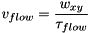
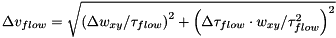

$$qf_commondoc_header.start$$ $$qf_commondoc_header.end$$
This file implement a one-component 3D diffusion model which also includes a flow and a triplett term. The model may be denoted as:
$$bmath:G(\tau)=G_\infty+\frac{1}{N}\cdot\frac{1}{(1+b/\mbox{cps})^2}\cdot\left(\frac{1-\Theta_{trip}+\Theta_{trip}\mathrm{e}^{-\tau/\tau_{trip}}}{1-\Theta_{trip}}\right)\cdot\left(1+\frac{4D\tau}{w_{xy}^2}\right)^{-1}\cdot\left(1+\frac{4D\tau}{\gamma^2w_{xy}^2}\right)^{-1/2}\cdot\exp\left(-\frac{v\tau}{w_{xy}\cdot\left(1+\frac{4D\tau}{w_{xy}^2}\right)\right)$$
The parameters are:
- $$math:G_\infty$$ : offset of the correlation function
- $$math:N$$: overall particle number (including currently dark particles, e.g. in triplet state)
- $$math:\Theta_{trip}, \Theta_{non}$$: fraction of the particles in the triplet/non-fluorescent state
- $$math:\tau_{trip},\tau_{non}$$: decay time of the triplet/non-fluorescent state
- $$math:D$$: diffusion coefficient
- $$math:v$$: flow veocity
- $$math: \gamma=\frac{z_0}{w_{xy}} $$: aspect ratio of the gaussian used to approximate the focus
- $$math: w_{xy} $$: lateral half axis of the focus gaussian
- $$math: z_0 $$: longitudinal half axis of the focus gaussian
- $$math:b$$: background intensity, as measured in a sample without fluorescing molecules (e.g. dark counts of the detector and scattering in the buffer contributes to this)
- $$math:cps$$: average background corrected intensity during the measurement, i.e. cps=Imeasured-b
This model also calculates the diffusion coefficient, if the width $$math: w_{xy} $$ of the laser focus (xy plane) is known, as:
$$bmath: D=\frac{w_{xy}^2}{4\tau_D} $$
where $$math: \tau_D$$ is the diffusion time. Also the effective focal volume $$math: V_{eff} $$ is calculated:
$$bmath: V_{eff}=\pi^{3/2}\cdot\gamma\cdot w_{xy}^3$$
Given this focal volume, the plugin may also calculate the particle concentration in the sample:
$$bmath: C=\frac{N}{V_{eff}}$$
Given the count rate cps and the background count rate b, we can calculate the counts per molecule:

In this model the flow velocity may be calculated from the characterstic flow time τf via:

The plugin also calculates some parameter errors:
$$bmath: \Delta \left(\frac{1}{N}\right)=\left|\frac{\Delta N}{N^2}\right| $$
$$bmath: \Delta D=\sqrt{\left(\Delta w_{xy}\cdot\frac{w_{xy}}{2\tau_D}\right)^2+\left(\Delta \tau_D\cdot\frac{w_{xy}^2}{4\tau_D^2}\right)^2} $$
$$bmath: \Delta V_{eff}=\sqrt{\left(\Delta\gamma\cdot\pi^{3/2}\cdot w_{xy}^3\right)^2+\left(\Delta w_{xy}\cdot 3\pi^{3/2}\cdot \gamma\cdot w_{xy}^2\right)^2} $$
$$bmath: \Delta C=\sqrt{\left(\frac{\Delta N}{\pi^{3/2}\cdot\gamma\cdot w_{xy}^{3}}\right)^2+\left(\Delta\gamma\cdot\frac{N}{\pi^{3/2}\cdot w{xy}^3\cdot\gamma^2}\right)^2+\left(\Delta w_{xy}\cdot\frac{3\cdot N}{\pi^{3/2}\cdot\gamma\cdot w_{xy}^4}\right)^2} $$


This model was taken from the paper:
- Kohler, R.H., P. Schwille, W.W. Webb, and M.R. Hanson. 2000. Active protein transport through plastid tubules: velocity quantified by fluorescence correlation spectroscopy. J Cell Sci 113(22):3921â??3930